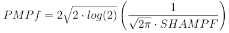
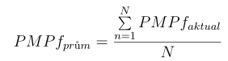

Video frame with index 4 means the video frame is supposed to be blurred, or with light reflection. Therefore there is a high probability that the registration of this video frame can fail when the control maximal registration shift would be exceeded. Video frame with index 5 will be written to the new video without any changes.

The lower PMPf indicator is, the more sharper the video frame is and vice versa. The value of the indicator vary from 18 to 90. To compare video frames using this indicator, it is necessary to calculate average PMPf from the video frames, which were marked as suitable video frames at the end of the first part using the referential video frame.
